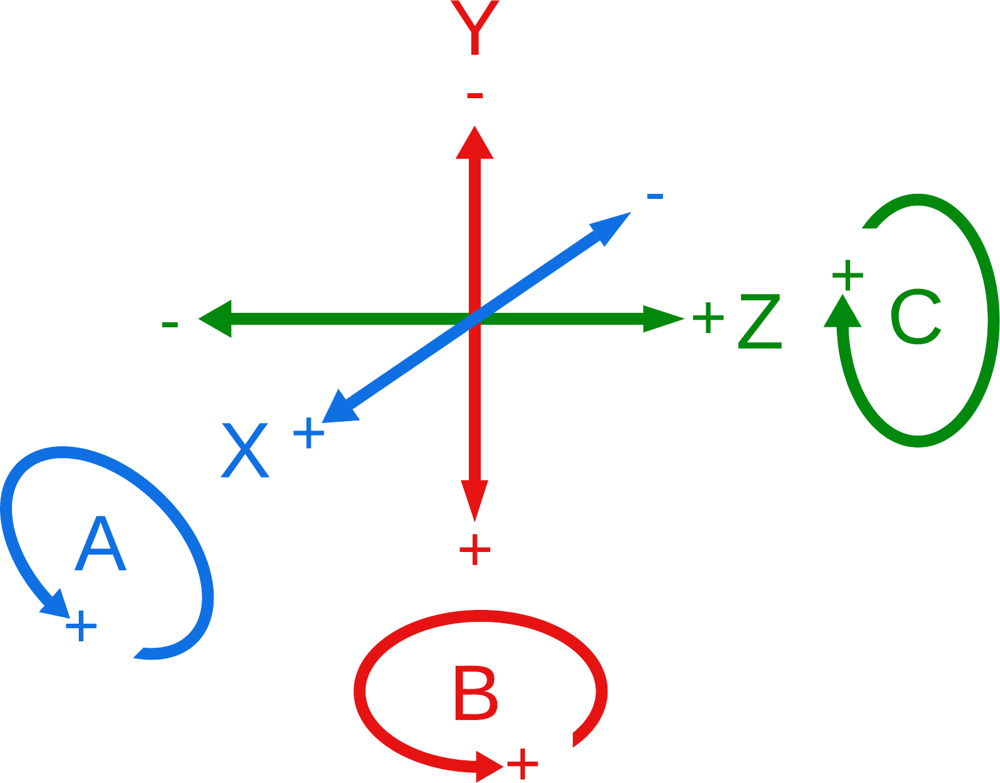
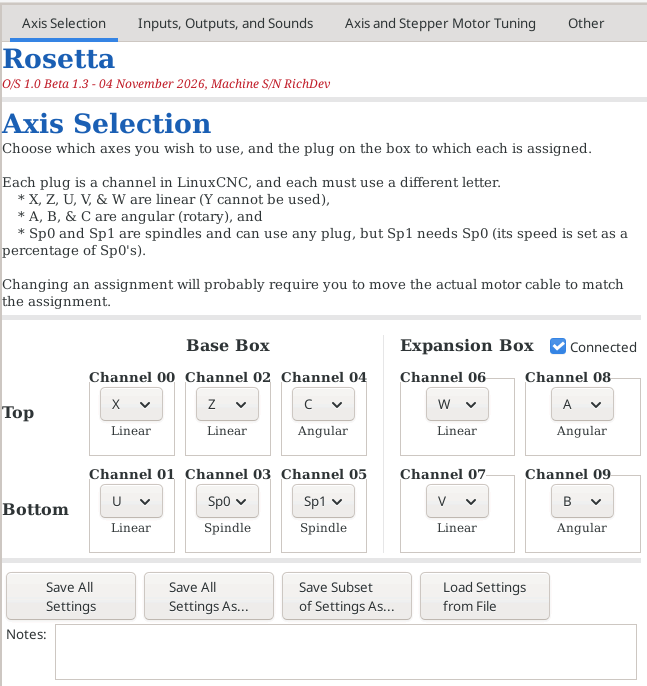
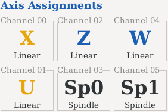

Key Note: The configuration program cannot be run when the Rosetta program is running. It is designed so that you configure the way Rosetta works, then run the system.

Lathe Axes
On this screen, you select which axes you want to use for the configurable ones. You must select from the standardized ① options available in LinuxCNC:
Linear Axes
- X
- n/a (there is no Y axis option in LinuxCNC when configured as a lathe)
- Z
- U (parallel to the X axis)
- V (parallel to the Y axis)
- W (parallel to the Z axis)
Rotary Axes
- A (rotation about the X axis)
- B (rotation about the Y axis)
- C (rotation about the Z axis)
Spindles
The spindles are specialized rotary axes.
- Sp0 is used for the primary spindle
- Sp1 is used for the rosette phaser / multiplier.
Whilst these are the traditional interpretations of those axes, there is nothing particularly critical about them except that some are linear, and others rotary. So, if you need to implement a device which has 3 axes rotating around the spindle axis, you can use A, B, & C to do that -- you'll just have to keep everything straight.
|
|
Additionally, you can select which channel (i.e., which plug) on the boxes is used for each axis. The only limitation is that Sp1 cannot be selected when Sp0 is not also selected.

Axis Selection Screen
Rosetta handles up to 10 channels - 6 on the base box and 4 more on the optional expansion box (see Base Box and Expansion Box below) - and any of the following can be assigned to them.
Spindles
The two spindles, Sp0 and Sp1, are used when you use the options on the main panel:
- Run Operation (to run the spindles in forward or reverse), or
- Indexing the spindles
If those motors are needed for synchronized movement with other axes,
- This is done via a gCode program, and
- The spindles will need to use one of the rotary/angular axes (A, B, or C) for their motion.
Base Box and Expansion Box
| Item | Base Box | Expansion Box |
| Channels (plugs) | 00 - 05 | 06 - 09 |
| Limit switch jacks | 1 - 3 | 4 - 6 |
| E-stop button | Yes | n/a |
| Signal tower | Yes | n/a |
Each plug's number matches its channel number. On the Axis Selection screen, the base box's channels are on the left and the expansion box's on the right, each laid out the way the plugs are on the box (Top and Bottom rows). The E-stop button and signal tower plug into the base box only.
Connected - tick the Connected box next to "Expansion Box" only if the expansion box is plugged in.
- With it ticked, LinuxCNC looks for the expansion box when it starts. If it can't find it, LinuxCNC will fail to start. If that happens, untick Connected and start Rosetta again.
- Turn on both boxes before starting Rosetta.
- Ticking or unticking Connected takes effect the next time Rosetta starts.
Without the expansion box its channels (and limit jacks 4 to 6) are greyed out, and the axes assigned to them can't be used. They keep their assignments, ready for when an expansion box is connected. To use one of those axes, choose it on a base box channel - the two swap, so the axis that was on that base box channel moves to the expansion box channel. For example, if Sp0 is on channel 06 and W is on channel 04, choosing Sp0 for channel 04 puts W on channel 06.
Impact of Any Changes
|  Axis Assignments on Base Box |
 Axis Assignments with Expansion Box |
Once the changes are saved and Rosetta is restarted, changes made to this screen:
- Set the way LinuxCNC interacts with the plugs on the system (via the channel assignments)
- Update the axes displayed on the right side panel (an example is to the right)
- Set the options available for the axes on the right side panel (linear axes have different options than angular/rotary axes).
- Update the Axis Assignments table displayed at the bottom of the right side panel, which shows the axis on each channel. The expansion box's channels are only shown when it is connected. Any axes not assigned to a channel in use are grayed out and not usable by the operator.
Running the Rosetta Settings Program
To access the Rosetta Settings program, there are 2 options:
|
|
Option 1: Use the icon on the desktop

Double-click on the Rosetta Settings icon on the desktop (the big gear)
|
|
Option 2: Use the Applications menu
- Click on Applications at the top left corner of the screen
- Click on the arrow to the right of Rosetta
- Click on Rosetta Settings (the one with a gear)
| Applications | |
 Rosetta > Rosetta >
| Rosetta
|
| Rosetta Settings
| |
 Backup Rosetta Backup Rosetta
| |
 Update Rosetta Update Rosetta
| |
 Geometric Chuck Designer Geometric Chuck Designer
| |
| Rosette Designer | |